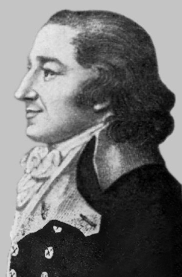

1.4. Ley de las proporciones reciprocas o ley de Richter
Conocimiento previo
|
Si las experiencias de Lavoisier ayudaron a establecer la composición cuantitativa de las sustancias, Richter trató de establecer relaciones numéricas entre las composiciones de dichas sustancias. En su trabajo con los ácidos y las bases, Richter observó que si se mezclaban disoluciones de ácidos y bases, éstas se neutralizaban, es decir, la mezcla no mostraba propiedades de ácido ni de base. Estudió este fenómeno y midió la cantidad exacta de diferentes ácidos que se necesitaba para neutralizar una cantidad determinada de una base particular y viceversa. Mediante mediciones cuidadosas encontró que se requerían cantidades fijas y exactas. A partir de sus observaciones dedujo la Ley de los pesos equivalentes que fue enunciada en 1792 y completada varios años más tarde por Wenzel. Esta ley establece que: “Los pesos de dos sustancias que se combinan con un peso conocido de otra tercera sustancia son químicamente equivalentes entre sí”. |

Jeremias Benjamin Richter
Wikipedia. Dominio público
|
Caso práctico
Así, por ejemplo 1 g de oxígeno puede combinarse con
- 0,12 g hidrógeno para dar agua (H2O)
- 4,40 g de cloro, para formar óxido hipocloroso (Cl2O)
- 0,37 g de carbono para formar dióxido de carbono (CO2)
- 1,00 g de azufre, para formar óxido sulfuroso(SO2)
- 2,50 g de calcio, para formar óxido cálcico (CaO)
Pero estas cantidades de hidrógeno, cloro, carbono, azufre y calcio pueden combinarse entre sí formando distintos compuestos.
Por lo tanto:
- Si se combinan 0,37 g de carbono con 0,12 g de hidrógeno se produce metano (CH4)
- Si se combinan 4,40 g de cloro con 0,12 g de hidrógeno se produce cloruro de hidrógeno (HCl)
- Y si se combinan 0, 37 g de carbono con 4,40 g de cloro se produce tetracloruro de carbono (CCl4)
Esta ley fija a cada elemento un peso relativo de combinación (peso equivalente) pero debido a la ley de las proporciones múltiples, algunos elementos pueden tener varios pesos equivalentes.
El peso equivalente de un elemento es la cantidad del mismo que se combina con 8,000 g de oxígeno o 1,008 g de hidrógeno.
En la práctica el concepto de peso equivalente se emplea casi exclusivamente en las reacciones ácido-base o de las reacciones de reducción-oxidación.
Obra publicada con Licencia Creative Commons Reconocimiento Compartir igual 4.0